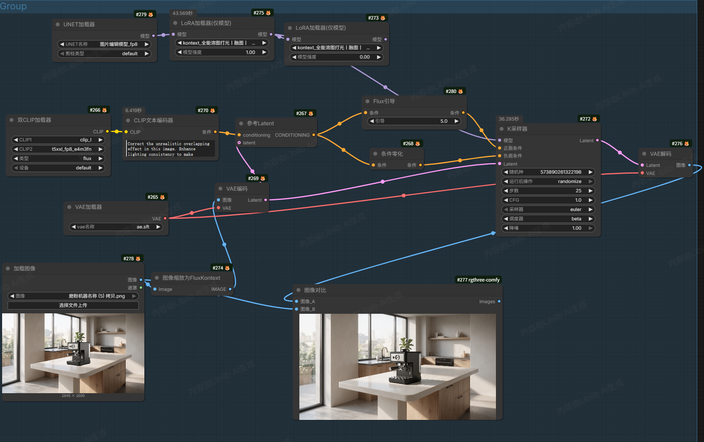
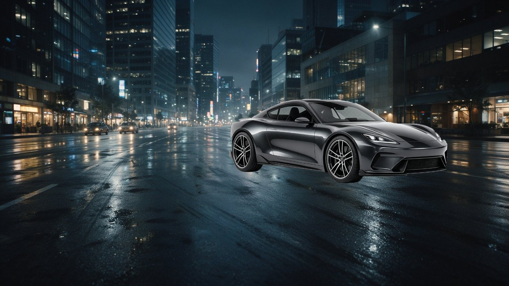
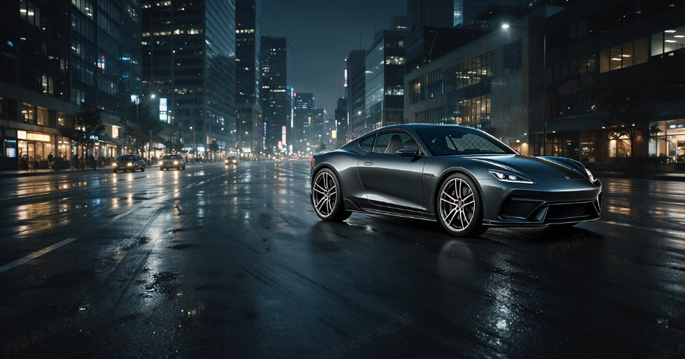
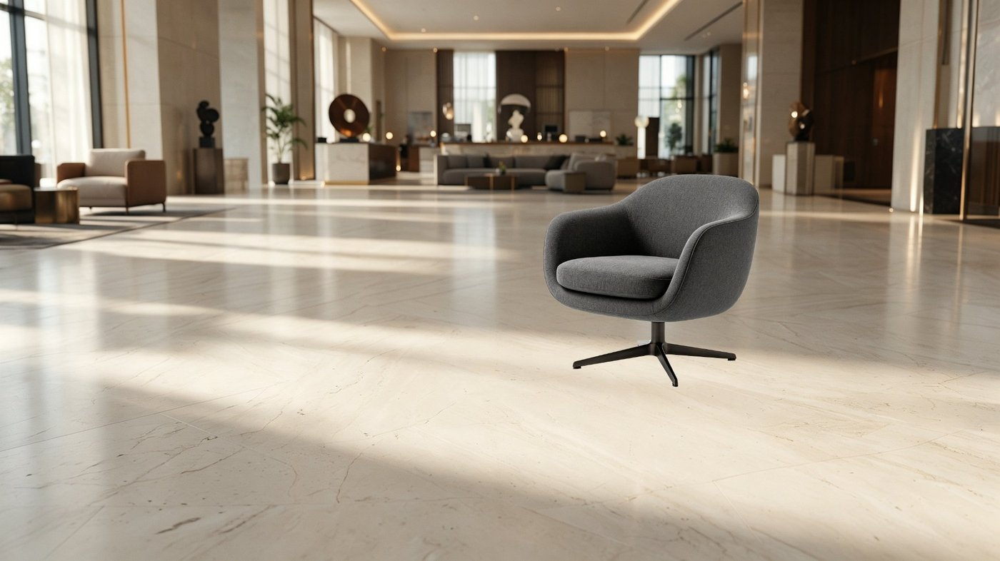
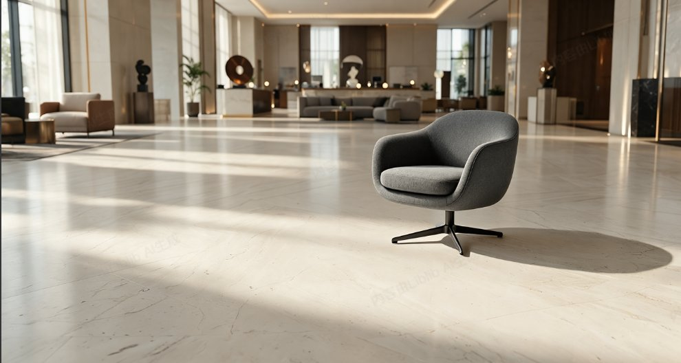
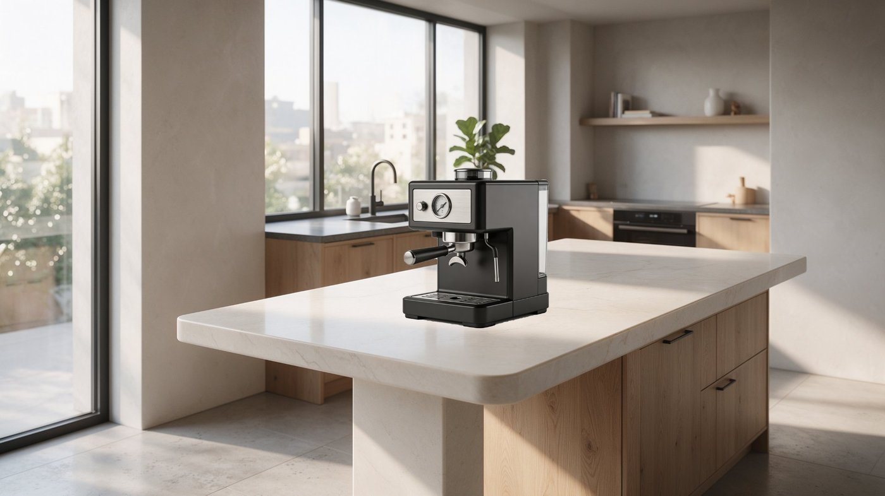
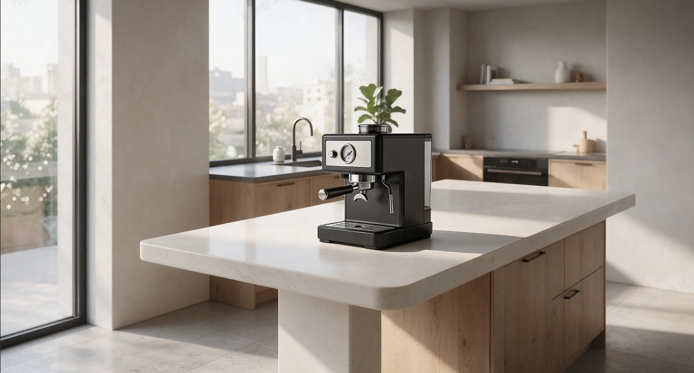

节点级产品场景合成：把白底产品「融」进真实场景，统一光影、补投影反射，让电商主图与品牌 KV 一次到位。覆盖汽车 / 家居 / 3C 三类场景。

白底产品直接放进场景后，常出现悬浮感、光影错位、边缘生硬——看起来像「贴图」而非「同一束光下的整体」。这正是电商主图与品牌 KV 最容易被一眼看穿的破绽。
通过节点链路做边缘重绘、阴影承接与反射匹配，让产品与场景成为同一束光下的整体：构图重排、光影重建、材质呼应、环境融合，四步把「贴图感」转成「实拍感」。
同一套节点，换参考图即出不同品类的商业成片。下方为三类典型场景的融图前 / 融图后对比。





